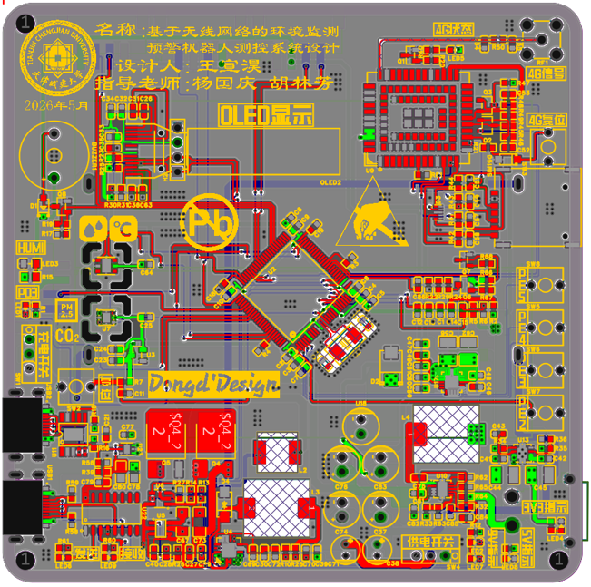
LAYOUT / STM32F407
Environmental IoT mainboard
Power rails, sensor interfaces and gateway connectivity for dual temperature-humidity monitoring, 4G telemetry and alarm logic.
PCB HARDWARE LAB
A focused record of the custom boards I designed, assembled, powered up and integrated across robots and thermal-control hardware.
Layout shows ownership. Assembly shows bring-up. The system path explains why each interface exists.
Explore board families01 · GRADUATION DESIGN
Two custom boards split sensing, gateway and voice interaction responsibilities across the inspection robot.

Power rails, sensor interfaces and gateway connectivity for dual temperature-humidity monitoring, 4G telemetry and alarm logic.
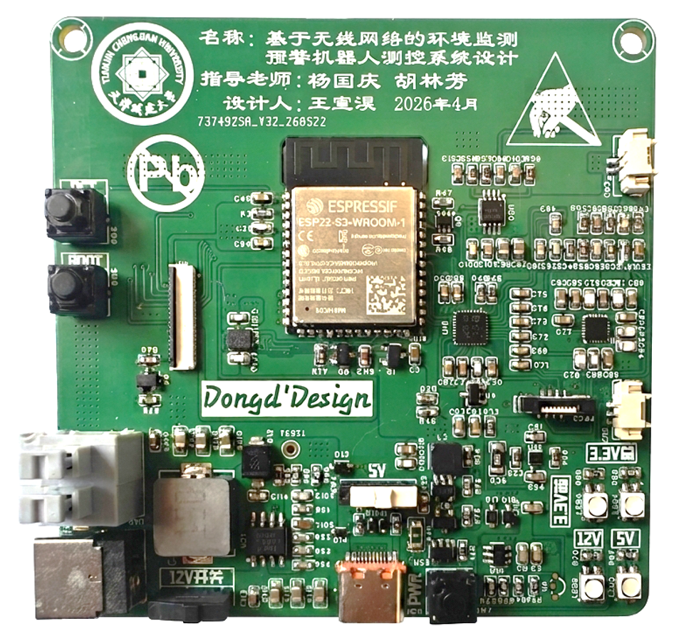
Audio capture, display and long-lived edge interaction in one board: dual microphones, ES7210 ADC and QSPI touch display.
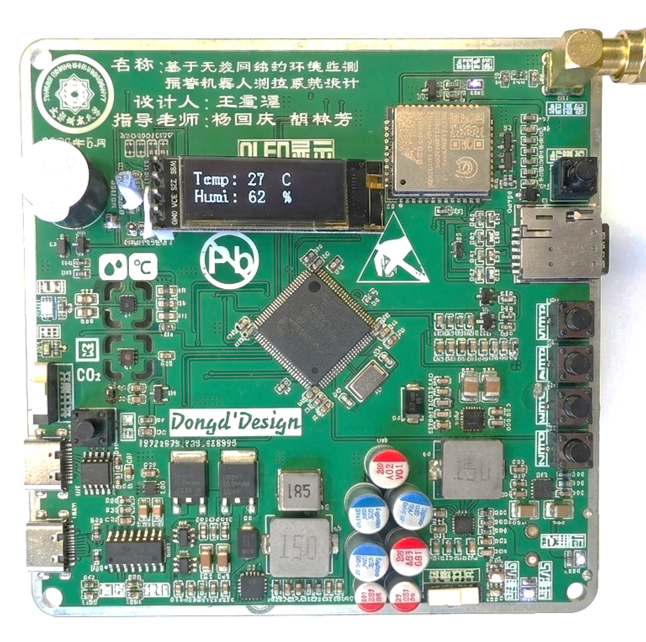

Layout and assembled evidence together show the path from interface definition to powered hardware.
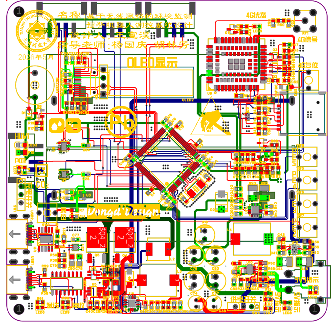
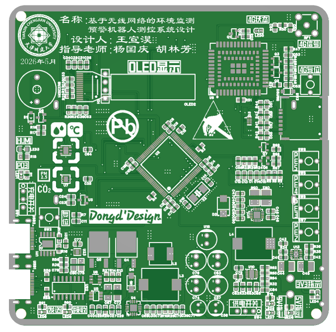
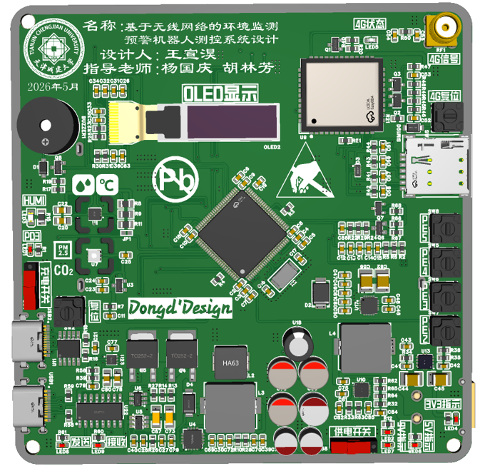

Top-layer routing, fabrication render, populated 3D view and powered hardware record the board from layout to bring-up.
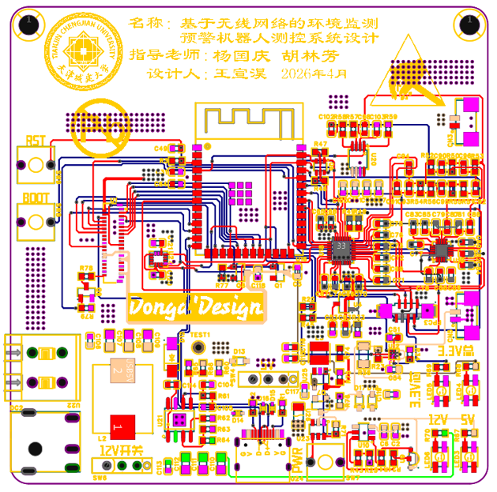
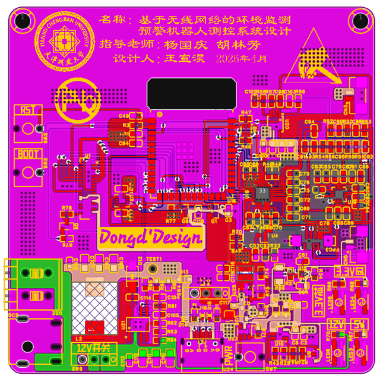
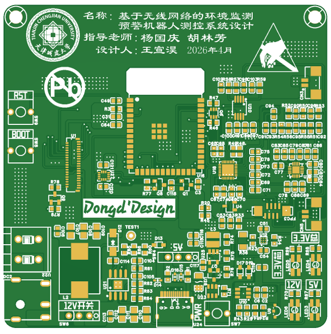
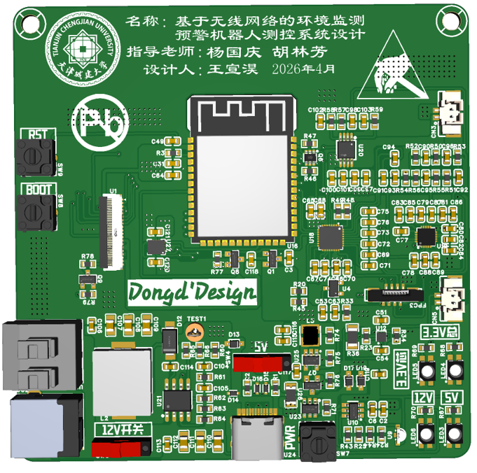
Routing layers, footprint verification, assembled rendering and physical hardware show the complete ESP32-S3 voice-interface implementation.
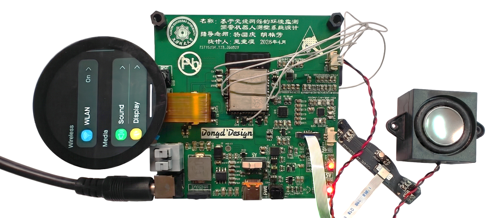
The final integration connects the round display, microphones, speaker and powered control board as one voice-interaction hardware path.
02 · 智境·随驭
Three boards separate sensing, power conversion and actuator drive so each subsystem can be tested and tuned independently.

I2C sensing for temperature, humidity and air-quality features feeding the forecast model.
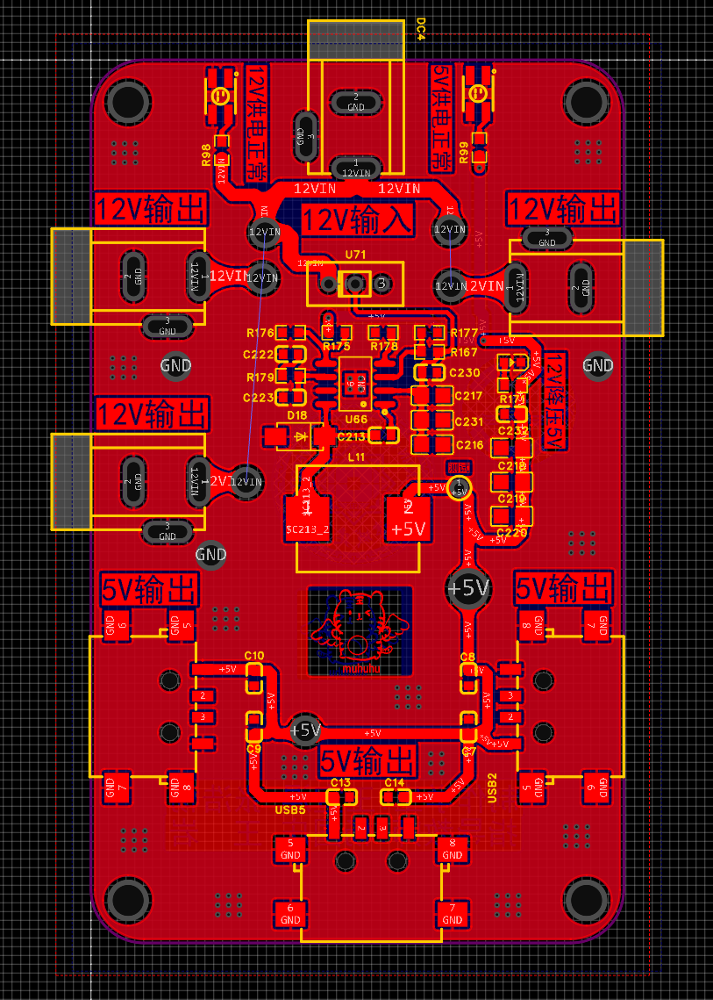
A dedicated power board keeps conversion and switching noise away from the sampled signals.
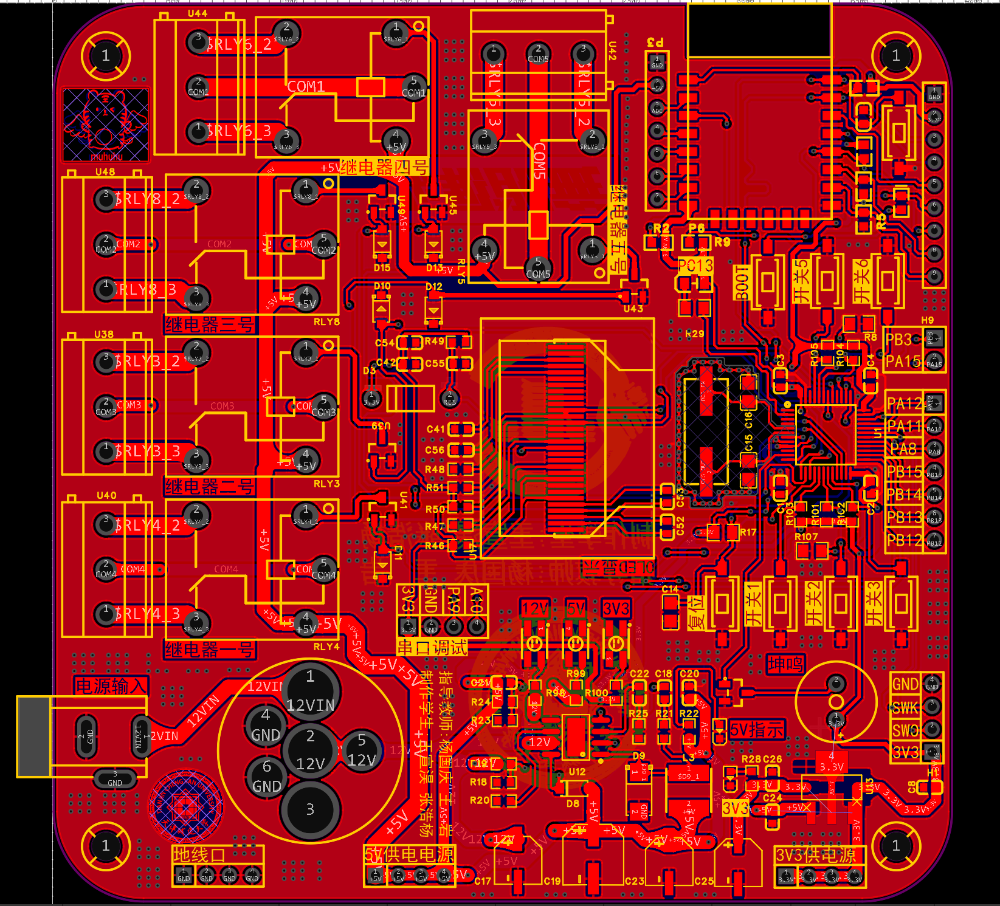
PWM and relay outputs turn the LSTM+CNN forecast into physical environmental regulation.
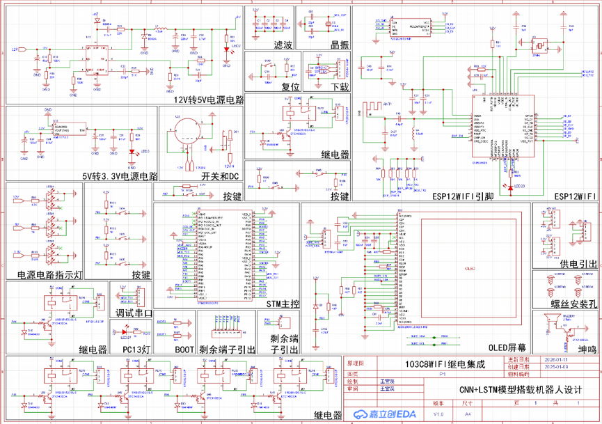
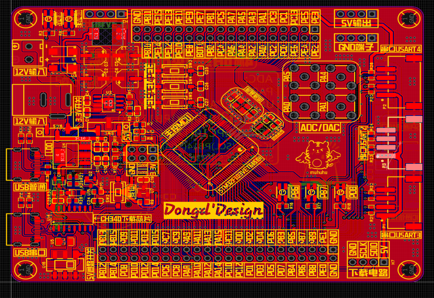
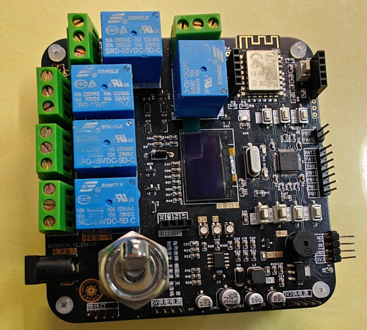
Power conversion, relay outputs, ESP12 Wi-Fi and STM32 control move from the complete schematic through dense routing to the assembled board.
03 · BEIJING INTERNSHIP
The thermal-control board sits at the boundary between multiphysics simulation, TEC interfaces, sensing and prototype validation.
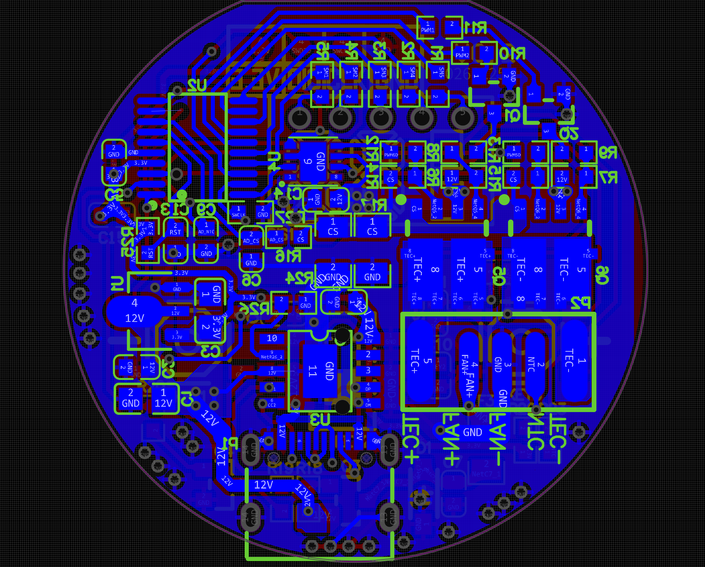
A hardware handoff point for TEC, NTC and fan interfaces, with power and control paths aligned to the thermal design.